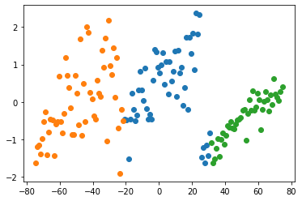

K mean clustering (Tugas 5)
Contents
K mean clustering (Tugas 5)#
import pandas as pd
import numpy as np
from numpy import unique
from numpy import where
from matplotlib import pyplot
from sklearn import preprocessing
from sklearn.cluster import KMeans
df = pd.read_csv('/content/drive/MyDrive/datamining/tugas/data/Iris.csv')
df
| Id | SepalLengthCm | SepalWidthCm | PetalLengthCm | PetalWidthCm | Species | |
|---|---|---|---|---|---|---|
| 0 | 1 | 5.1 | 3.5 | 1.4 | 0.2 | Iris-setosa |
| 1 | 2 | 4.9 | 3.0 | 1.4 | 0.2 | Iris-setosa |
| 2 | 3 | 4.7 | 3.2 | 1.3 | 0.2 | Iris-setosa |
| 3 | 4 | 4.6 | 3.1 | 1.5 | 0.2 | Iris-setosa |
| 4 | 5 | 5.0 | 3.6 | 1.4 | 0.2 | Iris-setosa |
| ... | ... | ... | ... | ... | ... | ... |
| 145 | 146 | 6.7 | 3.0 | 5.2 | 2.3 | Iris-virginica |
| 146 | 147 | 6.3 | 2.5 | 5.0 | 1.9 | Iris-virginica |
| 147 | 148 | 6.5 | 3.0 | 5.2 | 2.0 | Iris-virginica |
| 148 | 149 | 6.2 | 3.4 | 5.4 | 2.3 | Iris-virginica |
| 149 | 150 | 5.9 | 3.0 | 5.1 | 1.8 | Iris-virginica |
150 rows × 6 columns
df.head()
| Id | SepalLengthCm | SepalWidthCm | PetalLengthCm | PetalWidthCm | Species | |
|---|---|---|---|---|---|---|
| 0 | 1 | 5.1 | 3.5 | 1.4 | 0.2 | Iris-setosa |
| 1 | 2 | 4.9 | 3.0 | 1.4 | 0.2 | Iris-setosa |
| 2 | 3 | 4.7 | 3.2 | 1.3 | 0.2 | Iris-setosa |
| 3 | 4 | 4.6 | 3.1 | 1.5 | 0.2 | Iris-setosa |
| 4 | 5 | 5.0 | 3.6 | 1.4 | 0.2 | Iris-setosa |
df.shape
(150, 6)
Hitung Data#
# delete 'variety' column
df_without_label = df.drop(columns=["Species"])
df_without_label
| Id | SepalLengthCm | SepalWidthCm | PetalLengthCm | PetalWidthCm | |
|---|---|---|---|---|---|
| 0 | 1 | 5.1 | 3.5 | 1.4 | 0.2 |
| 1 | 2 | 4.9 | 3.0 | 1.4 | 0.2 |
| 2 | 3 | 4.7 | 3.2 | 1.3 | 0.2 |
| 3 | 4 | 4.6 | 3.1 | 1.5 | 0.2 |
| 4 | 5 | 5.0 | 3.6 | 1.4 | 0.2 |
| ... | ... | ... | ... | ... | ... |
| 145 | 146 | 6.7 | 3.0 | 5.2 | 2.3 |
| 146 | 147 | 6.3 | 2.5 | 5.0 | 1.9 |
| 147 | 148 | 6.5 | 3.0 | 5.2 | 2.0 |
| 148 | 149 | 6.2 | 3.4 | 5.4 | 2.3 |
| 149 | 150 | 5.9 | 3.0 | 5.1 | 1.8 |
150 rows × 5 columns
# separate target
# values
X=df.iloc[:,0:4].values
#
y = df.values[:,4]
le = preprocessing.LabelEncoder()
labels = le.fit_transform(y)
labels
array([ 1, 1, 1, 1, 1, 3, 2, 1, 1, 0, 1, 1, 0, 0, 1, 3, 3,
2, 2, 2, 1, 3, 1, 4, 1, 1, 3, 1, 1, 1, 1, 3, 0, 1,
0, 1, 1, 0, 1, 1, 2, 2, 1, 5, 3, 2, 1, 1, 1, 1, 10,
11, 11, 9, 11, 9, 12, 6, 9, 10, 6, 11, 6, 10, 9, 10, 11, 6,
11, 7, 14, 9, 11, 8, 9, 10, 10, 13, 11, 6, 7, 6, 8, 12, 11,
12, 11, 9, 9, 9, 8, 10, 8, 6, 9, 8, 9, 9, 7, 9, 21, 15,
17, 14, 18, 17, 13, 14, 14, 21, 16, 15, 17, 16, 20, 19, 14, 18, 19,
11, 19, 16, 16, 14, 17, 14, 14, 14, 17, 12, 15, 16, 18, 11, 10, 19,
20, 14, 14, 17, 20, 19, 15, 19, 21, 19, 15, 16, 19, 14])
# data_tes = np.array(labels)
kmeans = KMeans(n_clusters=3, n_init=1, max_iter=1)
kmeans.fit(X)
# kmeans.labels_
labels = kmeans.predict(X)
centroids = kmeans.cluster_centers_
centroids
array([[ 79. , 5.99344262, 2.80819672, 4.3852459 ],
[130. , 6.60731707, 2.99756098, 5.51219512],
[ 24.5 , 5. , 3.41458333, 1.46458333]])
df = pd.DataFrame(labels, columns=["Label"])
df
| Label | |
|---|---|
| 0 | 2 |
| 1 | 2 |
| 2 | 2 |
| 3 | 2 |
| 4 | 2 |
| ... | ... |
| 145 | 1 |
| 146 | 1 |
| 147 | 1 |
| 148 | 1 |
| 149 | 1 |
150 rows × 1 columns
from sklearn.decomposition import PCA
pca = PCA()
# pca = PCA(n_components=2)
X_new = pca.fit_transform(X)
X_new
array([[ 7.45410531e+01, 4.08041966e-01, -1.67187891e-01,
4.14697917e-02],
[ 7.35425448e+01, 2.74103351e-01, 3.25415580e-01,
-1.38484168e-01],
[ 7.25503976e+01, 4.34741494e-02, 2.37038467e-01,
7.28060752e-02],
[ 7.15449425e+01, 1.25559589e-01, 4.24436500e-01,
1.57682231e-01],
[ 7.05457903e+01, 2.03177345e-01, -2.20286071e-01,
1.55865750e-01],
[ 6.95315089e+01, 6.24870481e-01, -5.83114959e-01,
1.97857830e-01],
[ 6.85519476e+01, -7.78343360e-02, 1.36604362e-01,
2.90968715e-01],
[ 6.75436439e+01, 1.78388337e-01, -5.30131127e-02,
6.35510717e-02],
[ 6.65541830e+01, -2.49529805e-01, 6.22204564e-01,
1.07530662e-01],
[ 6.55453069e+01, 5.56046511e-02, 2.22053501e-01,
-6.25902272e-02],
[ 6.45416017e+01, 2.68973939e-01, -5.23459456e-01,
-2.70959953e-02],
[ 6.35457663e+01, 8.16806801e-03, 5.70863707e-02,
2.24416958e-01],
[ 6.25520909e+01, -1.93417444e-01, 3.01834079e-01,
-1.10353218e-01],
[ 6.15704157e+01, -7.47745105e-01, 4.68492199e-01,
9.27715656e-02],
[ 6.05510549e+01, 6.62088619e-02, -1.09451998e+00,
-2.46898117e-01],
[ 5.95439995e+01, 2.25283210e-01, -1.26861613e+00,
1.89250162e-01],
[ 5.85540250e+01, -1.31246684e-01, -7.84965476e-01,
-8.02847111e-03],
[ 5.75536953e+01, -2.33824559e-01, -2.86243469e-01,
-1.77597818e-02],
[ 5.65366822e+01, 2.92259370e-01, -7.55981279e-01,
-1.08679637e-01],
[ 5.55527889e+01, -2.29065746e-01, -5.04665060e-01,
2.02791435e-01],
[ 5.45406801e+01, 6.67266979e-02, -2.95466180e-01,
-1.63785361e-01],
[ 5.35538795e+01, -3.02937649e-01, -4.40132035e-01,
1.33946890e-01],
[ 5.25789754e+01, -1.02601939e+00, -2.57341629e-01,
1.91414672e-01],
[ 5.15466119e+01, -2.01488248e-01, -7.75730410e-02,
-3.67460959e-02],
[ 5.05446820e+01, -2.27077214e-01, 5.96547861e-02,
3.04794717e-01],
[ 4.95518589e+01, -4.09469875e-01, 1.66289934e-01,
-2.04777716e-01],
[ 4.85541895e+01, -4.53793956e-01, -1.54871590e-01,
3.92436339e-02],
[ 4.75561821e+01, -4.73999766e-01, -3.78526984e-01,
-7.71663543e-02],
[ 4.65601130e+01, -5.95312755e-01, -3.38194328e-01,
-1.84417128e-01],
[ 4.55597245e+01, -7.20367095e-01, 1.41561112e-01,
1.04406538e-01],
[ 4.45587056e+01, -7.04286746e-01, 1.59642946e-01,
-2.74098823e-02],
[ 4.35560283e+01, -5.18994584e-01, -4.34909419e-01,
-2.85891021e-01],
[ 4.25622808e+01, -6.72634877e-01, -8.84780713e-01,
2.76671346e-01],
[ 4.15629076e+01, -6.40645291e-01, -1.16189057e+00,
9.38053900e-02],
[ 4.05638983e+01, -8.88316709e-01, 4.69717690e-02,
-1.49692541e-01],
[ 3.95744247e+01, -1.13111380e+00, -1.85636441e-01,
-2.83427203e-01],
[ 3.85659454e+01, -8.27621150e-01, -6.64327068e-01,
-3.91671732e-01],
[ 3.75661293e+01, -1.00158727e+00, 2.59619611e-02,
-1.60144819e-01],
[ 3.65804734e+01, -1.46907519e+00, 3.02363283e-01,
2.29939255e-02],
[ 3.55660751e+01, -9.77635608e-01, -3.30572191e-01,
-1.14395858e-01],
[ 3.45757493e+01, -1.23962555e+00, -4.25067840e-01,
-7.33282635e-02],
[ 3.35785614e+01, -1.51865771e+00, 7.77675961e-01,
-4.87048844e-01],
[ 3.25842415e+01, -1.62338622e+00, 1.17271078e-01,
1.32810276e-01],
[ 3.15672284e+01, -1.09730229e+00, -3.52466732e-01,
4.18904210e-02],
[ 3.05570446e+01, -8.32195340e-01, -5.54932238e-01,
2.83250404e-01],
[ 2.95766317e+01, -1.43939364e+00, 7.07261929e-02,
-2.25328273e-01],
[ 2.85692837e+01, -1.16330287e+00, -6.62549692e-01,
1.50611257e-01],
[ 2.75816441e+01, -1.62258175e+00, 6.54944864e-03,
2.43681988e-02],
[ 2.65712266e+01, -1.21798193e+00, -7.36129227e-01,
-9.30355447e-02],
[ 2.55780648e+01, -1.49095568e+00, -2.99814497e-01,
-1.86547497e-01],
[ 2.44328243e+01, 2.32836927e+00, -2.67647345e-01,
-1.98646720e-01],
[ 2.34489310e+01, 1.80704416e+00, -1.63311261e-02,
1.12824352e-01],
[ 2.24281128e+01, 2.37269786e+00, -8.72525815e-02,
-1.17254657e-01],
[ 2.14770601e+01, 8.50558430e-01, 1.00159036e+00,
-6.23789717e-02],
[ 2.04446252e+01, 1.83773416e+00, 2.54566499e-01,
-1.69699015e-01],
[ 1.94598797e+01, 1.29721619e+00, 6.43995278e-01,
3.16574314e-01],
[ 1.84472440e+01, 1.73481856e+00, -1.40252980e-02,
3.07516859e-01],
[ 1.75137143e+01, -2.11668764e-01, 9.97339018e-01,
9.10645799e-02],
[ 1.64466307e+01, 1.73726033e+00, 9.45593971e-02,
-1.88214992e-01],
[ 1.54907905e+01, 3.75665947e-01, 7.74572238e-01,
3.21699497e-01],
[ 1.45058245e+01, -9.57808216e-02, 1.29944028e+00,
-1.49568466e-01],
[ 1.34731552e+01, 9.16188418e-01, 2.44376697e-01,
1.60839582e-01],
[ 1.24765270e+01, 7.73365528e-01, 7.49828200e-01,
-4.87892004e-01],
[ 1.14535944e+01, 1.37269702e+00, 3.58018994e-01,
1.68534705e-01],
[ 1.05005907e+01, 1.36785822e-01, 2.75048004e-01,
3.65369226e-02],
[ 9.45843186e+00, 1.35147825e+00, -2.27404354e-01,
-2.39087528e-01],
[ 8.47021924e+00, 8.26411782e-01, 4.63334650e-01,
4.68457985e-01],
[ 7.48137677e+00, 5.57179373e-01, 4.60226595e-01,
-2.11284079e-02],
[ 6.46033754e+00, 1.07720490e+00, 7.56917856e-01,
-4.32256891e-01],
[ 5.49197023e+00, 2.10162601e-01, 6.47800829e-01,
-1.02718020e-01],
[ 4.45913793e+00, 1.08428076e+00, 2.11489978e-01,
5.04577394e-01],
[ 3.48423453e+00, 4.75898396e-01, 1.62106933e-01,
-2.14446642e-01],
[ 2.44880073e+00, 1.31423923e+00, 5.64646181e-01,
-1.59458865e-01],
[ 1.46063421e+00, 9.96770279e-01, 3.66525865e-01,
7.18174185e-02],
[ 4.72012830e-01, 7.73166040e-01, -4.19490556e-03,
-2.36719500e-01],
[-5.33162435e-01, 9.23356113e-01, -1.65443022e-01,
-2.69348847e-01],
[-1.55027975e+00, 1.33406543e+00, 2.53846936e-03,
-3.61936313e-01],
[-2.55454466e+00, 1.41122545e+00, -4.56821892e-02,
-9.14310750e-02],
[-3.52671701e+00, 5.83752920e-01, 2.44017138e-01,
9.89486425e-02],
[-4.48722651e+00, -4.57644120e-01, 3.20959556e-01,
-3.09699836e-01],
[-5.49529645e+00, -3.40914329e-01, 6.71555253e-01,
-1.78353752e-01],
[-6.49096885e+00, -4.63869125e-01, 6.33348345e-01,
-2.23728165e-01],
[-7.50030044e+00, -1.79569327e-01, 2.92770279e-01,
-1.57170438e-01],
[-8.54529588e+00, 9.09439912e-01, 5.53301752e-01,
2.09117383e-01],
[-9.51366319e+00, 4.23976094e-02, 4.44184725e-01,
5.38656254e-01],
[-1.05195277e+01, 3.11245907e-01, -1.97703566e-01,
3.83941797e-01],
[-1.15367032e+01, 8.14178130e-01, -2.80862093e-01,
-1.86582510e-01],
[-1.25229181e+01, 3.25180317e-01, 4.60658076e-01,
-5.44924578e-01],
[-1.34990845e+01, -3.45030782e-01, 1.84448171e-01,
2.24246665e-01],
[-1.44953747e+01, -5.11971942e-01, 5.92393543e-01,
-6.40535827e-02],
[-1.55085701e+01, -2.10578836e-01, 6.31665264e-01,
1.61899968e-01],
[-1.65216025e+01, 2.28665345e-01, 5.21842517e-02,
9.09661528e-02],
[-1.74968445e+01, -4.70298123e-01, 3.32480788e-01,
-2.11997403e-01],
[-1.84612766e+01, -1.51707832e+00, 7.70306427e-01,
-1.62695080e-01],
[-1.94993967e+01, -4.81448548e-01, 4.09250885e-01,
5.96033493e-02],
[-2.04988287e+01, -4.71935425e-01, 1.13174464e-01,
1.75292371e-01],
[-2.14984817e+01, -5.08050473e-01, 1.84710758e-01,
1.09931917e-01],
[-2.25081513e+01, -1.99632404e-01, -5.83611772e-02,
-1.83941693e-01],
[-2.34473788e+01, -1.91254463e+00, 4.31145576e-01,
-2.48489752e-01],
[-2.44930636e+01, -7.04877172e-01, 2.11036875e-01,
-4.28704142e-03],
[-2.55666264e+01, 1.18109021e+00, 8.34781564e-02,
6.98790956e-01],
[-2.65291783e+01, 1.25425740e-01, 5.34151826e-01,
2.79315653e-01],
[-2.75736722e+01, 1.44286715e+00, -1.53749017e-01,
-6.73443732e-02],
[-2.85516465e+01, 7.33595108e-01, 2.51812049e-01,
2.73271953e-01],
[-2.95604058e+01, 9.68983123e-01, 1.21767571e-01,
2.82532927e-01],
[-3.06033581e+01, 2.18695916e+00, -2.23605659e-01,
-1.16844244e-01],
[-3.14924571e+01, -1.04102114e+00, 9.50082924e-01,
4.84904254e-01],
[-3.25874181e+01, 1.70090725e+00, -9.23201666e-02,
-1.11991849e-01],
[-3.35621465e+01, 9.30555531e-01, 3.79543391e-01,
-1.73697181e-01],
[-3.45746199e+01, 1.39130961e+00, -6.65056468e-01,
2.96849816e-01],
[-3.55300627e+01, 1.42772791e-01, -2.95756643e-01,
9.21488480e-02],
[-3.65371047e+01, 2.31425457e-01, 2.05799645e-01,
-7.04804379e-02],
[-3.75478022e+01, 5.67920651e-01, -1.88232882e-01,
-7.03786785e-02],
[-3.85160981e+01, -4.61766238e-01, 6.29442545e-01,
1.38319468e-01],
[-3.95191140e+01, -3.67055174e-01, 3.64569762e-01,
2.95898810e-01],
[-4.05321464e+01, 7.21890064e-02, -2.14911251e-01,
2.24964994e-01],
[-4.15407300e+01, 2.60307045e-01, -5.58825760e-02,
1.15052855e-01],
[-4.25962101e+01, 1.85813579e+00, -9.58212223e-01,
3.11791882e-01],
[-4.36073952e+01, 2.01047650e+00, 3.96665511e-02,
-3.50427895e-01],
[-4.45169239e+01, -5.26795756e-01, 6.62678238e-01,
-2.67582072e-01],
[-4.55495932e+01, 4.85173483e-01, -3.92385347e-01,
4.28259759e-02],
[-4.65040088e+01, -9.06139831e-01, 3.60048522e-01,
3.20641456e-01],
[-4.75964592e+01, 1.68576959e+00, -2.07832931e-01,
-3.24392186e-01],
[-4.85124792e+01, -6.14643959e-01, 5.04003202e-02,
-2.13394864e-01],
[-4.95434901e+01, 2.28113466e-01, -3.92029066e-01,
2.23677902e-01],
[-5.05607243e+01, 7.08569225e-01, -4.94154160e-01,
-4.82914279e-02],
[-5.15049017e+01, -8.66949667e-01, -2.68982292e-02,
-1.37405134e-01],
[-5.25055826e+01, -8.74987589e-01, -1.06322526e-01,
9.12097830e-02],
[-5.35348177e+01, -1.56489050e-01, 1.01815420e-01,
5.78373114e-02],
[-5.45513753e+01, 3.90429537e-01, -4.27495387e-01,
-2.69761161e-01],
[-5.55649086e+01, 7.15940913e-01, -2.90717535e-01,
-4.04238948e-01],
[-5.65777787e+01, 1.17833680e+00, -1.25677783e+00,
4.43168860e-03],
[-5.75318430e+01, -3.07516467e-01, 7.38023427e-02,
4.39009411e-02],
[-5.85118138e+01, -8.23458427e-01, -3.57646590e-02,
-1.02578787e-01],
[-5.95270516e+01, -5.36332752e-01, 3.77238315e-01,
1.12547938e-01],
[-6.05644944e+01, 6.80459217e-01, -6.43176391e-01,
-4.97274592e-01],
[-6.15251221e+01, -5.20590121e-01, -3.71993656e-01,
4.67678702e-01],
[-6.25233506e+01, -5.86424101e-01, -2.28036334e-01,
1.70219239e-01],
[-6.34924526e+01, -1.42770633e+00, -1.61107666e-01,
7.74504119e-02],
[-6.45251086e+01, -4.86158770e-01, -5.40518816e-01,
-2.10919105e-01],
[-6.55288011e+01, -4.57910533e-01, -3.78205886e-01,
2.28937902e-03],
[-6.65128694e+01, -8.17266304e-01, -6.48136270e-01,
-3.43558253e-01],
[-6.74986883e+01, -1.42260529e+00, 2.47017786e-01,
1.36467858e-01],
[-6.85382911e+01, -2.65033682e-01, -4.37598802e-01,
1.12928456e-01],
[-6.95286170e+01, -5.27023622e-01, -5.32094452e-01,
1.53996051e-01],
[-7.05111438e+01, -9.85844766e-01, -4.59497223e-01,
-2.44568727e-01],
[-7.14997525e+01, -1.39457006e+00, 7.76078930e-02,
-3.75391393e-01],
[-7.25069247e+01, -1.16574927e+00, -3.66594840e-01,
-1.18624977e-01],
[-7.35076645e+01, -1.19626365e+00, -4.64985704e-01,
4.08544917e-01],
[-7.44936583e+01, -1.63963330e+00, -9.10782514e-02,
2.31252324e-01]])
# retrieve unique clusters
clusters = unique(labels)
# fit the model
kmeans.fit(X)
# assign a cluster to each example
yhat = kmeans.predict(X)
# create scatter plot for samples from each cluster
for cluster in clusters:
# get row indexes for samples with this cluster
row_ix = where(yhat == cluster)
# create scatter of these samples
pyplot.scatter(X_new[row_ix, 0], X_new[row_ix, 1])
# show the plot
pyplot.show()

from sklearn.neighbors import KNeighborsClassifier
model=KNeighborsClassifier
model.fit(x_train, y_train)
NameErrorTraceback (most recent call last)
<ipython-input-19-139fa7af76d2> in <module>
----> 1 model.fit(x_train, y_train)
NameError: name 'x_train' is not defined
# save the model
import pickle
filename = 'savedmodel.sav'
pickle.dump(model, open(filename, 'wb'))